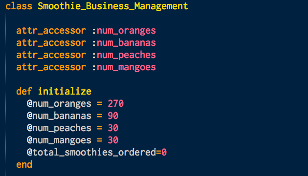
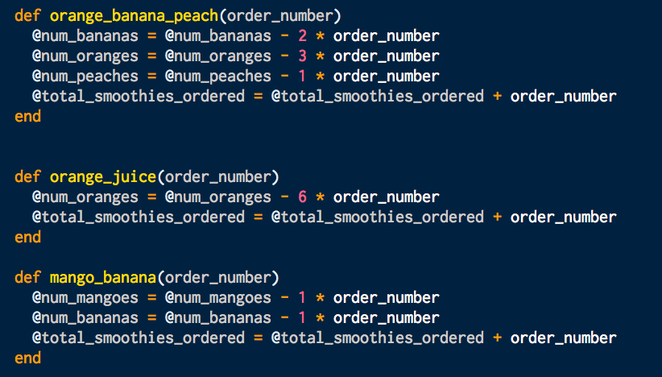
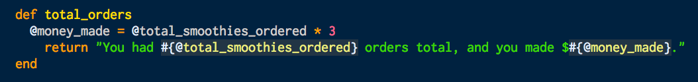
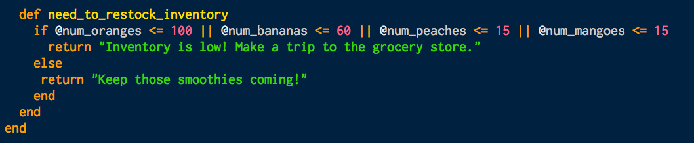
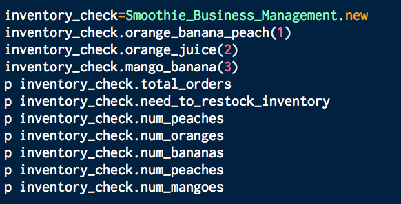
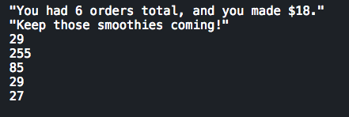
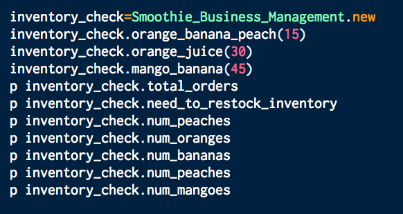
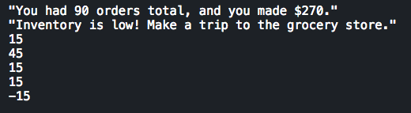

Classes allow you to organize objects with similar attributes and methods. To get a better understanding of how classes work, we can look at a real life example. Let's say you are a health enthusiast who is starting your own smoothie business. You have the following three extraordinary items on your menu: orange banana peach smoothie, orange juice, and mango banana smoothie. Each drink is priced at three dollars. It can get tricky trying to run a business. You need to keep track of your inventory, the number of drinks ordered in a day, and the amount of money made in a day. You accomplish this by creating a program that manages your business.

You start out by naming a class Smoothie_Business_Management in your program. Your smoothies require four ingredients: oranges, bananas, peaches, and mangoes. You call the attr_accessor method on four instance variables: num_oranges, num_bananas, num_peaches, and num_mangoes. The instances of this class will store their data in these instance variables. By calling the attr_accessor method in this class, the attr_writer and attr_reader methods are defined for the four instance variables. The instance variables num_oranges, num_bananas, num_peaches, and num_mangoes are all given default values in the initialize method, which will be executed every time you create a new instance of the class. These instance variables tell you the inventory of fruit that you have at the beginning of your day before you have sold any smoothies. In addition, these instance variables will also keep track of the status of the inventory of the fruits as sales are made. The @total_smoothies_ordered instance variable will help you keep track of the total smoothies ordered in the day. This is initially set to 0.
Now your orders start to roll in. The three instance methods defined below correspond to each drink on the menu. For example, the orange_banana_peach method takes the argument order_number. This orange banana peach smoothie recipe requires 2 bananas, 3 oranges, and 1 peach. To keep track of your inventory of ingredients, you multiply the number of fruit required to make the smoothie by the order number. This number is then subtracted from the current amount of fruit in the inventory. The total_smoothies_ordered variable will update based on the number of orders placed.
After you have the total number of drinks ordered for the day, you multiply the number by 3 (the price of each smoothie) to get the total amount of money made for the day.
The need_to_restock_inventory method will tell you whether or not your inventory has dropped too low. If your oranges drop below 100, bananas below 60, peaches below 15, and mangoes below 15, then the program will return a message telling you to go to the grocery store. If your inventory of fruit is above those values, then you can keep making smoothies!
In the example below, you create a new instance of the class called inventory_check. You had 6 orders for the day, made $18, and have plenty of inventory still left over. You have also displayed the number of fruit leftover in inventory by calling the attr reader method.
 In the example below, you had 90 orders and made $270. Your inventory is extremely low. It's time to restock!
 